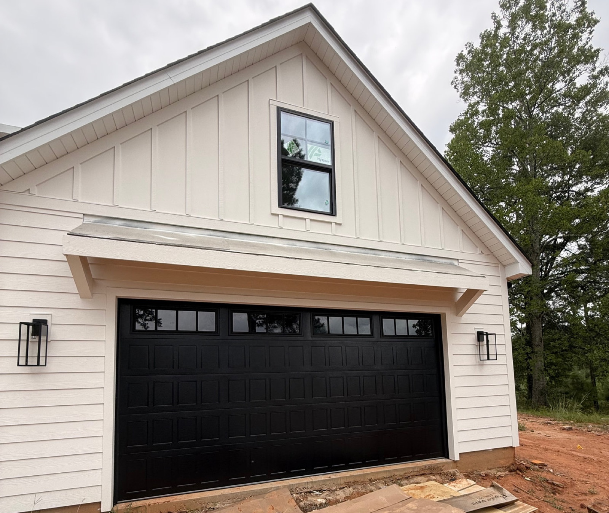
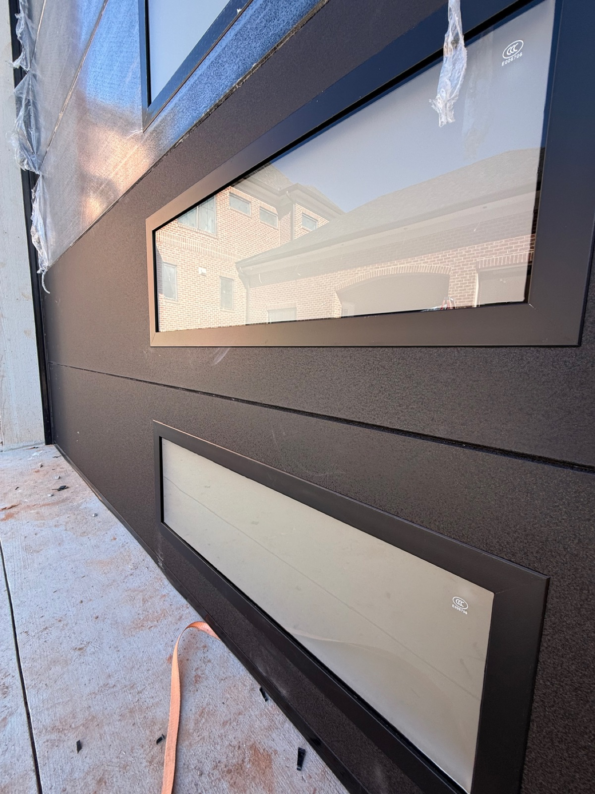
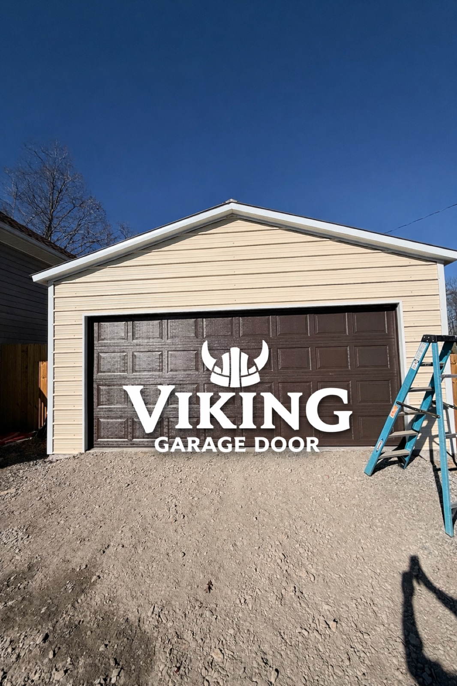
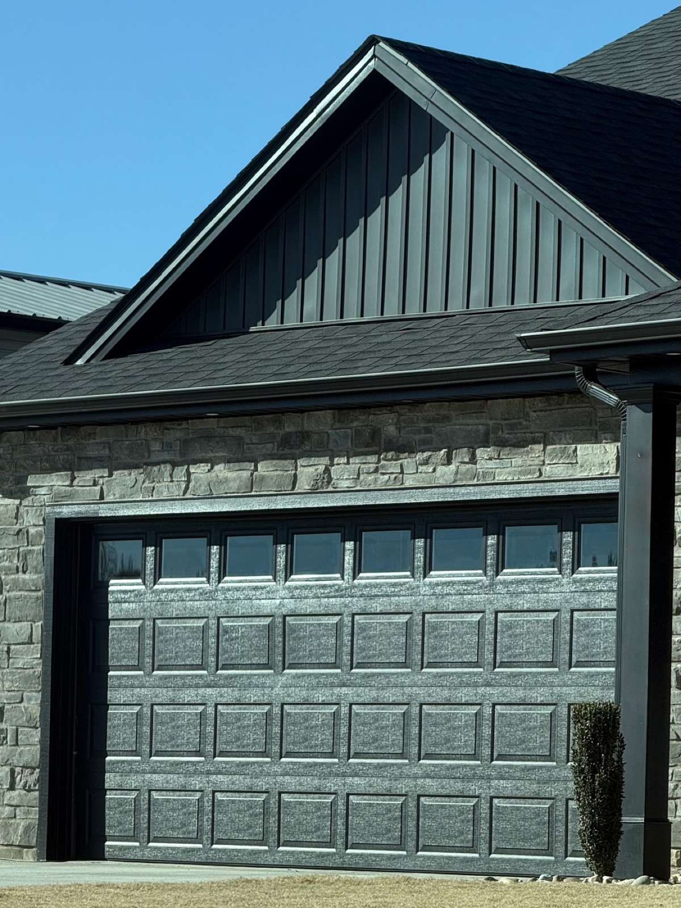

Home / Installation
Insulated steel doors, modern glass designs and custom looks — professionally installed from $1,950, with a free on-site estimate first.
New Doors
Whether your old door is beyond repair or you're upgrading curb appeal, we help you pick the right door, haul off the old one and install the new one — usually in a single day.

Energy-efficient R-9 to R-18 insulation — quieter operation and a warmer garage year-round.

Flush panels, full-view glass and black-frame styles that transform the front of your home.

Colors, windows, hardware — configured to match your home exactly.
Pricing
Installed prices including tear-out of the old door, new tracks and springs, balancing and haul-away:
Use our online configurator to build your door and see a ballpark price instantly, or call for a free on-site estimate.

Call Viking Garage Door for a free estimate — or build your door online and text us the result.